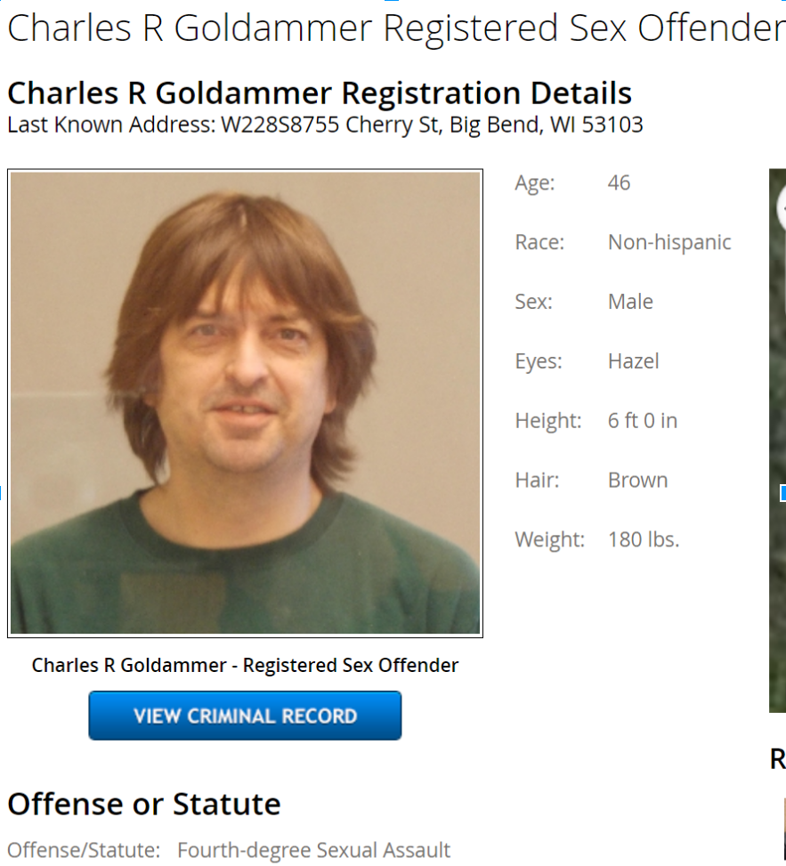

Ken Godejohn's step father, Charlie Goldammer
In 2012 Goldammer was charged with sexual assault on a minor as well as child endangerment. Police learned of the alleged assault after the 14-year-old daughter of his then girlfriend (both names being withheld for privacy) reported the crime to a school counselor, who then reported it to police.
He was sentenced to four years in prison for his crimes but was released in 2015 on good behavior.
Goldammer is a registered sex offender in the state of Wisconsin.
